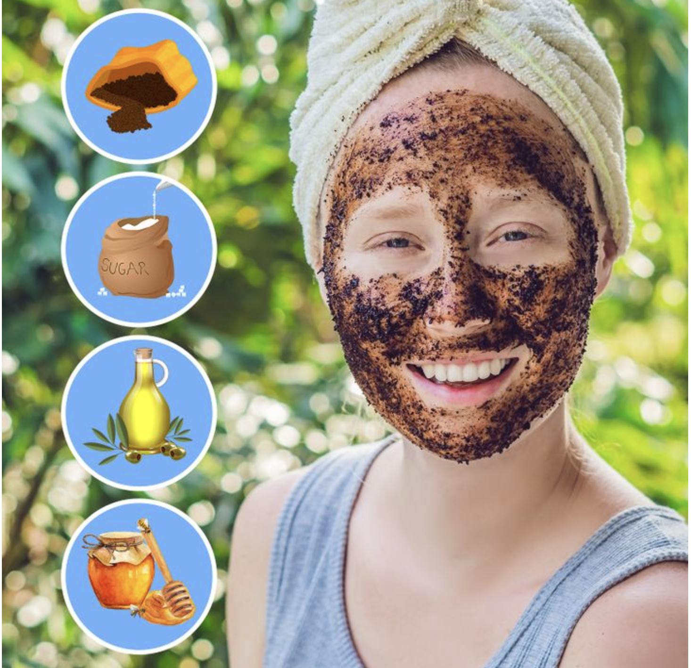

Coffee is a natural exfoliant, excellent for removing dead skin cells.
It stimulates the production of collagen and acts as an anti-inflammatory.
After a relaxing coffee mask, the skin on the neck and face will be soft, clean, and smooth.
You will need:
- 1 cup of ground coffee (150 g)
- 1 cup of brown sugar (200 g)
- 3 tbsp of olive oil (48 g)
- 2 tbsp of honey (50 g)
How to prepare:
Mix both ingredients in a cup or bowl until combined. You should get a firm paste.
How to use:
Apply the scrub to your lips and use your fingers to gently massage the scrub in circular motions.
Use at least 3 times a week.
Rinse with water and then apply your favorite moisturizing balm.